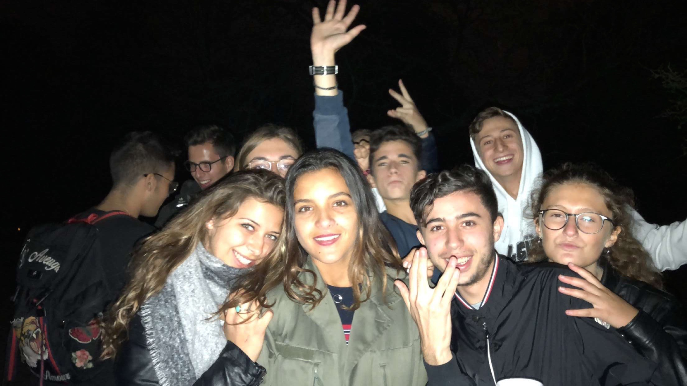
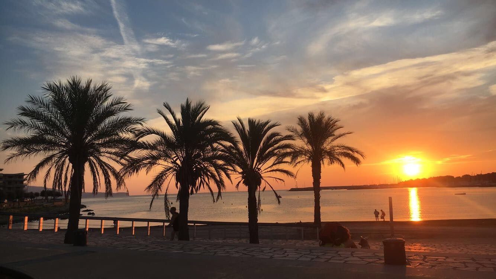
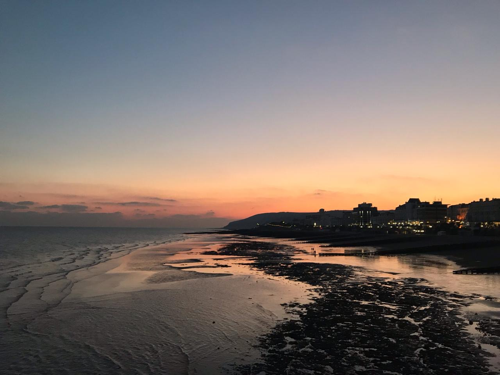

Bonjour, voici le site que j'ai crée grace à "le wagon"
Je m’appelle Morgane ECH-CHIBI étudiante au sein du cursus Global BBA de l’ESSEC. Ce programme offre une réelle ouverture sur le monde et me permet d’ouvrir une fenêtre sur mon avenir.
Découvrir le WagonSuite à l’obtention du baccalauréat, j’ai eu la chance de pouvoir aller vivre durant 9 mois en Angleterre avant de reprendre ma scolarité en France en entament mes études supérieures à l'ESSEC.
Passionnée par l’équitation depuis 13 ans, le sport a constitué une grande partie de mon temps libre. Les compétitions ont permis de me forger une personnalité déterminée tout comme mon intérêt pour l’art et la littérature qui m’ont permis une réelle ouverture d’esprit qui me sert énormément aujourd’hui.
J'ai beaucoup voyagé. Je suis allé plusieurs fois au Maroc. J'ai notamment eu le plaisir de visiter Casablanca et Rabat. J'espère bien continuer de visiter le Maroc avec ma famille car je m'y plais beaucoup et j’aime découvrir de nouveaux paysages.
J'ai aussi eu la possibilité de vivre et étudier en Angleterre durant mon année de césure. J'y ai acquis le niveau C1 en suivant des cours chez Education First. Cette année de césure m'a permis de m'ouvrir à une nouvelle culture riche en tradition. Cette expérience m'a donné envie de découvrir de nouveau pays et de nouvelles cultures. Le programme BBA de l'ESSEC m'a permis de partir 5 mois à Budapest. J'ai également pu développer mes compétences grâce à mes deux années d'alternance.:
